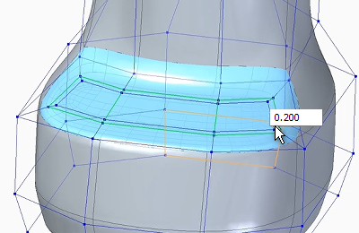
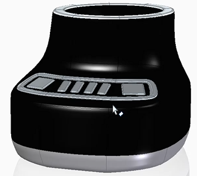
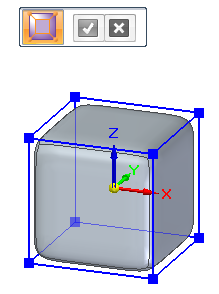
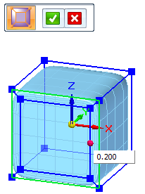
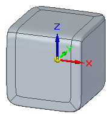
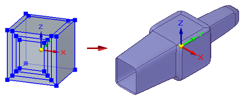

Split faces with offset
You can add geometric detail to one or more cage body faces by raising or lowering split faces.
On this subdivision model of a blender base, the control pad was formed by lifting the outer edges. The buttons were subsequently added in ordered modeling mode.


In the Subdivision Modeling environment, choose the Home tab→Modify group→Split list→Split with Offset command .
Select one or more cage body faces to split. Faces do not have to be contiguous or share common edges. You also can select faces on different cage bodies.

The default offset value is displayed in the edit box.

Adjust the offset value—You can control the width of the new faces by typing an offset value in the edit box or by dragging the red handle, which is displayed on the last face selected.
To accept the offset value and finish the subdivision body, right-click or click the check mark.

Use the Undo command to undo the split faces.
You can split additional faces by selecting the Split with Offset command again.
Use the synchronous edit handle to drag split faces to create shapes like this:

How do I
Subdivision Modeling workflowMove cage elements
Move using Quick Move
Use symmetric mode in Subdivision Modeling
Scale a subdivision model
Split subdivision model faces
Offset cage faces
Connect cage faces or edges with a bridge
Delete and fill cage faces
Align a shape to a curve
Learn more
Introduction to Subdivision ModelingUsing PathFinder with subdivision models
Working with cage elements
Creating subdivision features
Working with subdivision features
Moving and rotating cage elements
Look up more details
Subdivision Modeling commandBox command in Subdivision Modeling
Box command bar
Cylinder command in Subdivision Modeling
Cylinder command bar
Sphere command in Subdivision Modeling
Sphere command bar
Torus command
Torus command bar
Scale command in Subdivision Modeling
Blend command
Show Blend Values command
Split command
Split with Offset command
Bridge command
Align to Curve command
Cage Style command